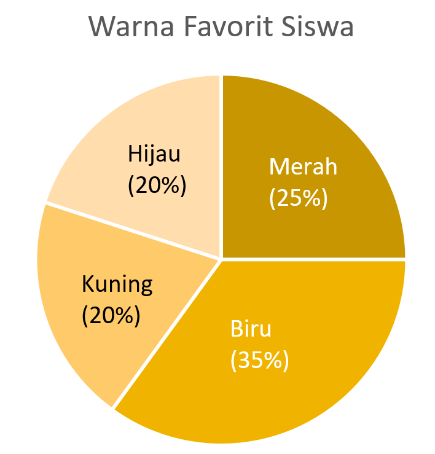

Media Interaktif Diagram Lingkaran dengan Scaffolding
Sheldon M. Ross dalam Introductory Statistics menjelaskan bahwa diagram lingkaran (pie chart) merupakan lingkaran yang dibagi menjadi beberapa sektor, dengan setiap sektor mewakili kategori data.
Perhatikan kumpulan kotak warna berikut! Setiap kotak menunjukkan warna favorit seorang siswa.
| Warna | Frekuensi |
|---|---|
| 🟦 Biru | |
| 🟥 Merah | |
| 🟩 Hijau | |
| 🟨 Kuning |
Berikut ini adalah data warna favorit siswa yang telah disusun dalam tabel.
| Warna Favorit | Banyak Siswa |
|---|---|
| 🟦 Biru | 7 |
| 🟥 Merah | 5 |
| 🟩 Hijau | 4 |
| 🟨 Kuning | 4 |
Sebelum membuat diagram, kita harus mengetahui jumlah seluruh data.
Sekarang kita akan menentukan persentase setiap warna berdasarkan jumlah siswa.
Persentase suatu kategori dapat dihitung dengan:
Perhatikan data warna favorit siswa berikut.
| Warna Favorit | Banyak Siswa |
|---|---|
| 🟦 Biru | 7 |
| 🟥 Merah | 5 |
| 🟩 Hijau | 4 |
| 🟨 Kuning | 4 |
| Jumlah Data | 20 |
Sekarang kamu sudah mengetahui persentase siswa yang menyukai warna biru. Berikutnya, lakukan langkah yang sama pada kategori lain.
| Warna Favorit | Banyak Siswa |
|---|---|
| 🟦 Biru | 7 |
| 🟥 Merah | 5 |
| 🟩 Hijau | 4 |
| 🟨 Kuning | 4 |
| Jumlah Data | 20 |
🟦 Biru
🟥 Merah
🟩 Hijau
🟨 Kuning
Artinya, seluruh data sudah terwakili oleh satu lingkaran penuh.
Kamu sudah menghitung persentase siswa yang menyukai warna biru. Sekarang perhatikan diagram lingkaran di bawah ini.

Persentase menunjukkan seberapa besar bagian suatu kategori dalam satu lingkaran.
🟥 25% berarti sektor siswa penyuka biru besarnya tepat ¼ lingkaran.
🟩 atau 🟨 20% berarti sektor siswa penyuka hijau atau kuning sedikit lebih kecil dari ¼ lingkaran (25%).
🟦 35% berarti sektor Mangga sedikit lebih kecil dari ½ lingkaran (50%).
Semakin besar persentase suatu kategori, semakin besar pula bagian kategori tersebut dalam diagram lingkaran.
Kamu telah menyelesaikan Materi Interaktif 2.
Kamu sudah belajar mengenal diagram lingkaran, menghitung jumlah data, menentukan besar sudut, dan memahami hubungan antara data dengan besar sektor.